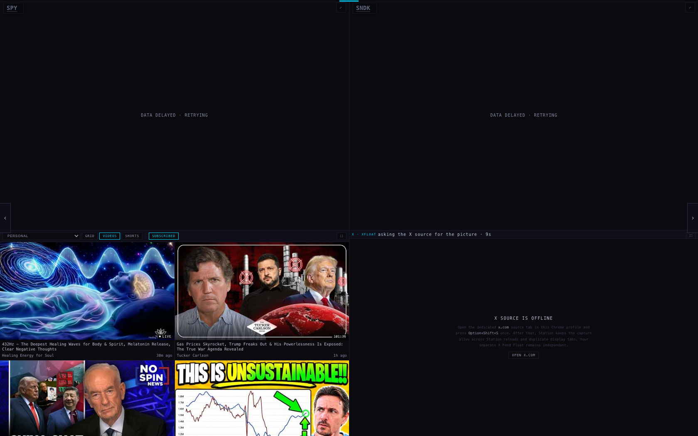
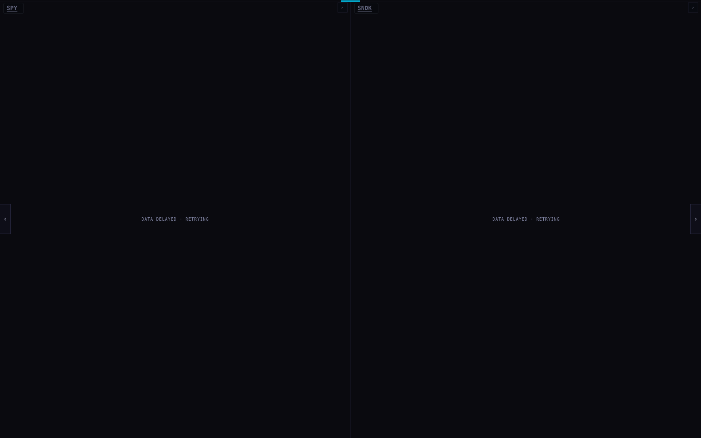
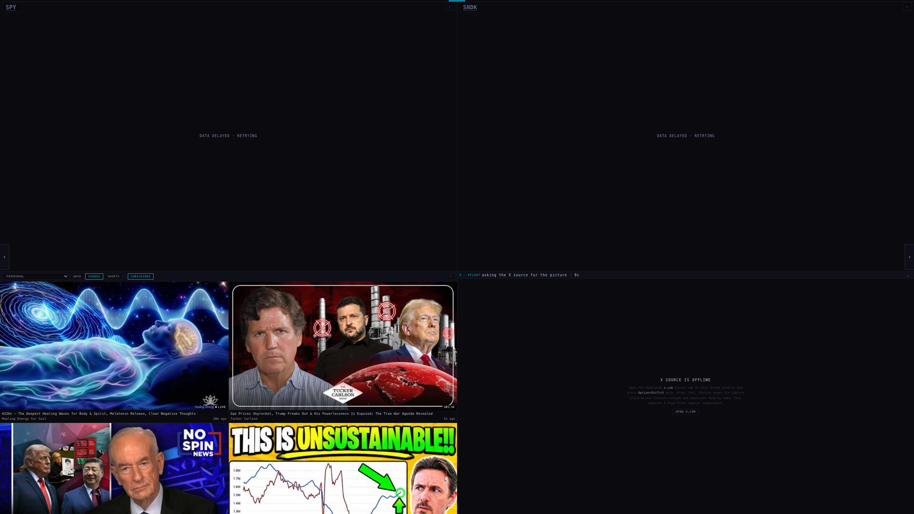
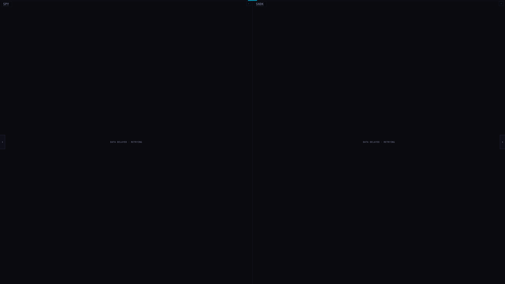
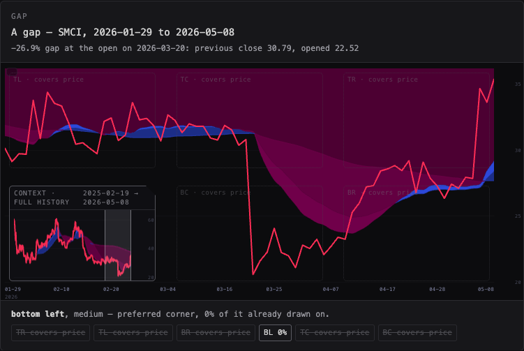
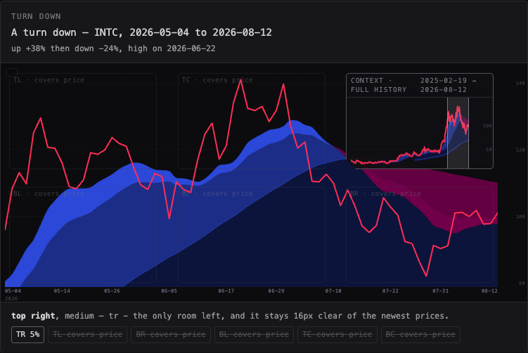

Two things. One key gives the whole wall to the charts and takes the video and X panes off it without killing the X capture. And the Context Lens now moves to the side the price is not on, keeps off the newest prices, and holds still while you are reading it.
Press W — for wall — or the charts only button in the dock. The video and X panes go, the charts take the whole wall, and the same key brings them back. The Station remembers which way you left it, in this browser: reload and it comes back charts-only.
| screen | chart row before | chart row after | media row | same X pane? |
|---|---|---|---|---|
| 1680 × 1050 | 554 px | 1050 px | kept at 399 px | yes |
| 2560 × 1440 | 760 px | 1440 px | kept at 547 px | yes |
| 390 × 844 (phone) | 946 px | 946 px | 946 → 473 px | yes |
On a phone the Station is already one scrolling column, so the charts do not get wider — the column simply stops carrying the media panes, and you scroll less to see every chart.




The obvious way to hide a pane is display:none. That would take the X pane's frame
out of the page altogether, and the live capture with it — the thing the last night of work went
into making reliable. So the media row is taken out of the layout (so the charts can have the
space) and drawn at zero opacity behind them, at a real size. It is never unmounted.
Measured across a toggle at all three widths: the X pane is the same element
with the same address, still in the page, display:flex, visibility:visible,
opacity:0. Nothing reloaded.
What I could not prove: that a capture actually kept streaming, because no capture was running on this machine — the pane says "X SOURCE IS OFFLINE" in the screenshots. What is proven is that the pane is never destroyed or resized to nothing, which is what would break it. First time you use it on the real wall, glance at the X pane after bringing it back.
Three rules were added on top of "never cover the price line":


Run over the six saved chart-API windows the workshop already holds:
| case | recent trend | where the lens went | why |
|---|---|---|---|
| SMCI | up | bottom left | preferred corner, nothing drawn on it |
| UNH | up | bottom centre | emptiest corner that clears price |
| T | down | bottom left | top left is where that downtrend starts, so it would cover price |
| INTC | down | top right | the only room left, 16 px clear of the newest prices |
| MU | sideways | top left | preferred corner |
| SPY | down | the shelf below the chart | a sideways range through the middle leaves no corner — this one parked on the shelf before this change too |
Note the T case: the rule about going high is a preference, never a licence to cover the line. When the high side is where the price actually is, the lens takes the free corner instead.
| shape | what it is | verdict |
|---|---|---|
| capsule | fully rounded ends, like a pill | softest, but the curve eats the first and last character of every line, so the box has to grow to say the same thing |
| chamfer (shipped) | a card with the corner nearest the price line cut off at 45° | the cut is the tell — it points at what the lens is dodging, costs no text width, and on a wide short Station pane it reads as deliberate rather than as a bubble sitting on the chart |
Both are one line of CSS on the same box, so swapping is a token change if you disagree.
| what | source |
|---|---|
| The prices in the lens cases | saved responses from the chart API's
/candles, daily, split-adjusted, provider-built, already stored next to the workshop
page in cases/. No live call was made for these pictures. |
| "Rising" / "falling" | the slope of the last third of the drawn line, in pane pixels, divided by the plot height — so it does not change with the price scale. |
| "Already drawn on" | read from the chart's own canvas: how many sampled pixels inside a candidate box are painted. |
| Pane sizes in the table above | measured in a headless browser on this MacBook at each width, before and after pressing W. |
station/charts-only-20260924 from
81e2ab7.station-shells/x-v2/ or the bridge — another lane is
changing those this week. The charts-only work is in its own functions and its own CSS block.